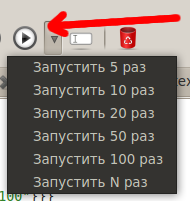
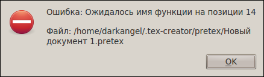
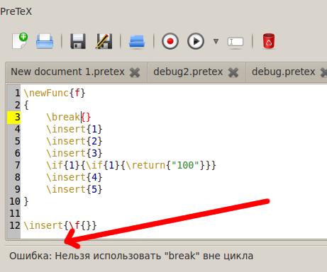

[Назад: 1.1. Синтаксис PreTeX]
[Далее: 1.3. Специальные функции]
Запуск и запись
Запуск программы
Для запуска программы на языке PreTeX требуется, собственно, текст этой программы и наличие открытого в TeX Creator
документа. Чтобы запустить программу, нажмите на соответствующую кнопку:

Можно автоматически запустить программу несколько раз подряд. Для этого щелкните по небольшой стрелке рядом с кнопкой
запуска и выберите нужное количество запусков.
Если во время анализа программы возникнет ошибка, будет выдано соответствующее сообщение:

Если же ошибка возникнет во время выполнения программы, то о ней будет сообщено в области под редактором PreTeX:

Если потребуется прервать выполнение программы, можно воспользоваться кнопкой Остановить выполнение:

При закрытии окна приложения и при деактивации плагина PreTeX выполняющаяся программа прерывается автоматически.
Запись команд
PreTeX позволяет записывать нажатия клавиатуры в редакторе TeX Creator и преобразовывать их в соответствующие команды с
целью воспроизведения в дальнейшем. При этом действия, приводящие к вставке текста, преобразуются в команды \insert, а
все остальные (такие как выделение текста) - в команды \press.
Чтобы начать запись команд, воспользуйтесь кнопкой Начать запись команд:

После нажатия этой кнопки вы можете производить требуемые действия с документом - они будут записываться. Чтобы
завершить запись, воспользуйтесь кнопкой Остановить запись команд:
В редактор PreTeX будет добавлен новый документ с записанными командами.
[Назад: 1.1. Синтаксис PreTeX]
[Далее: 1.3. Специальные функции]